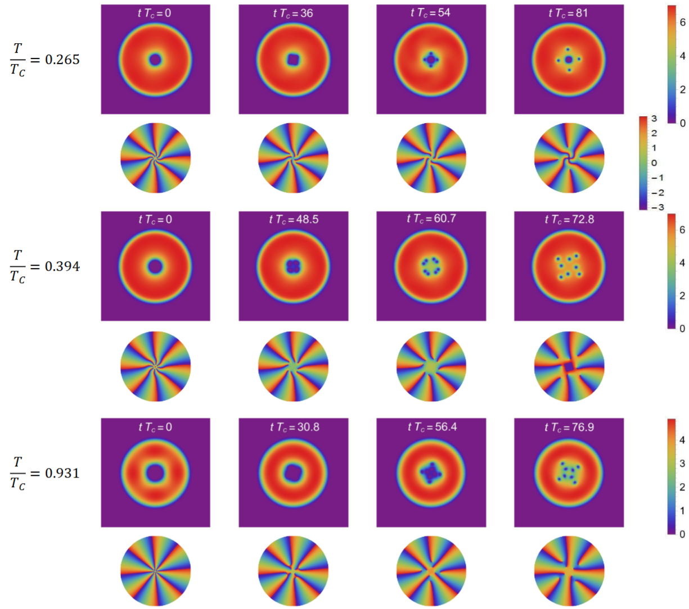
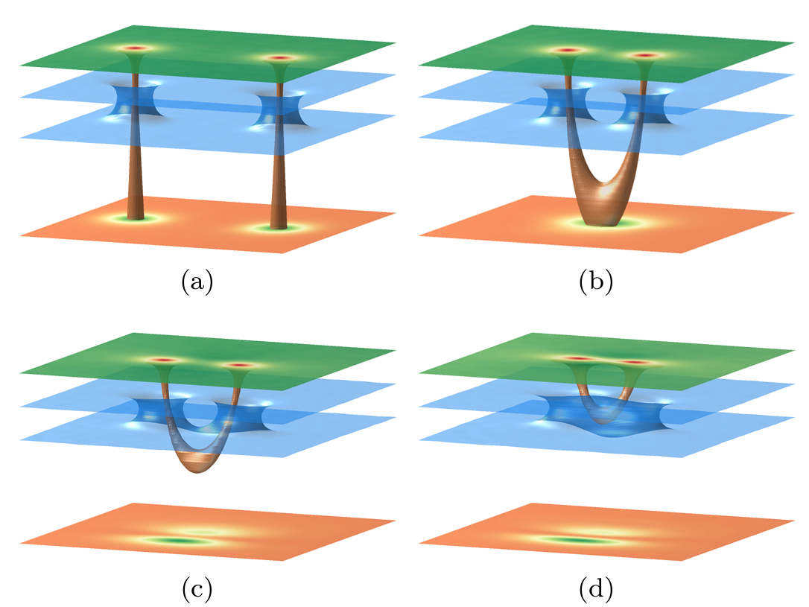
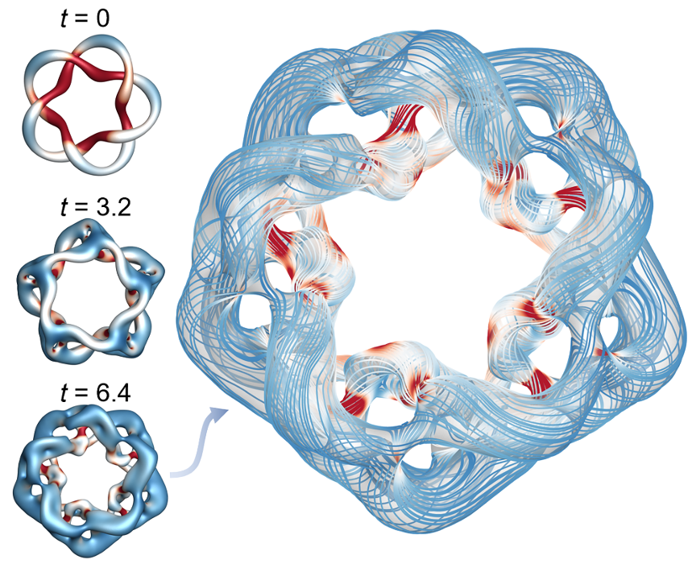
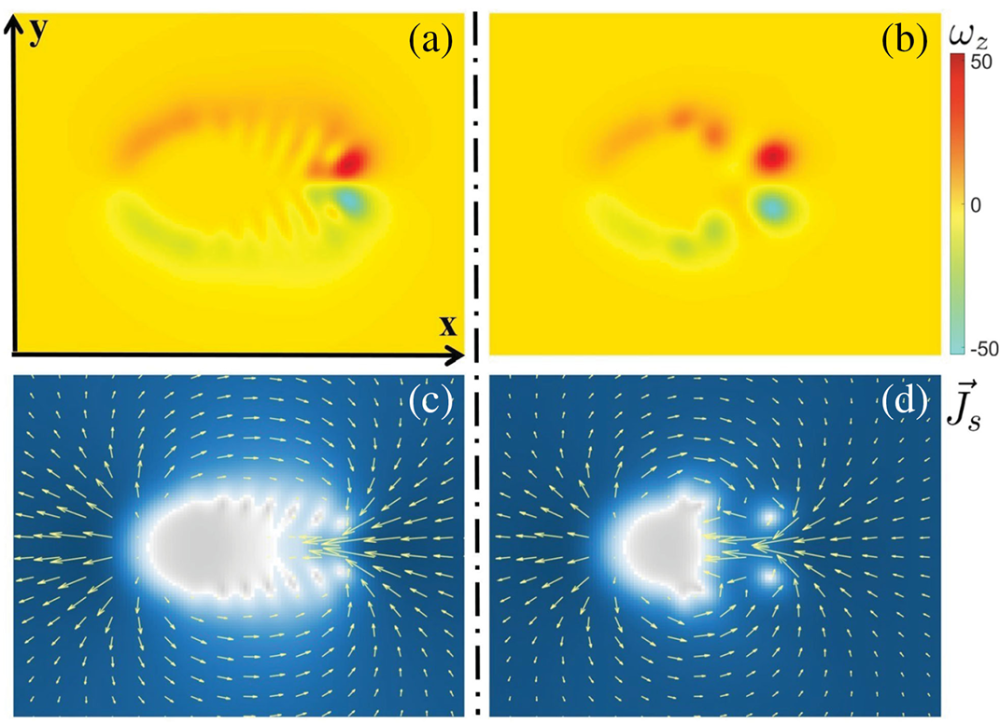
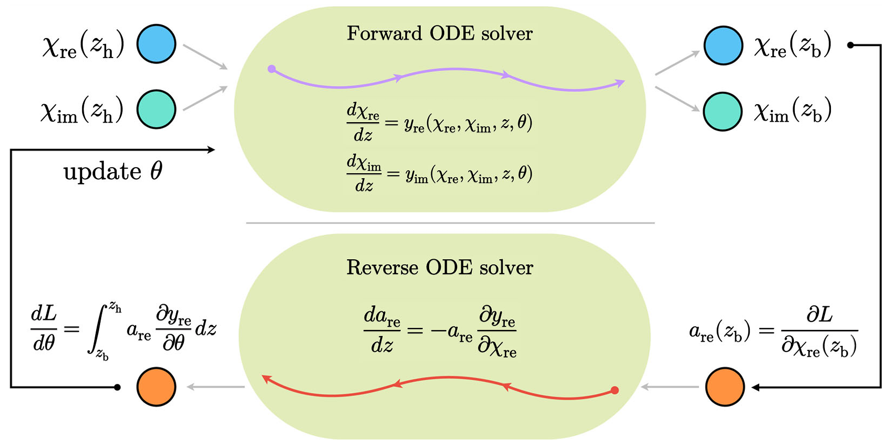
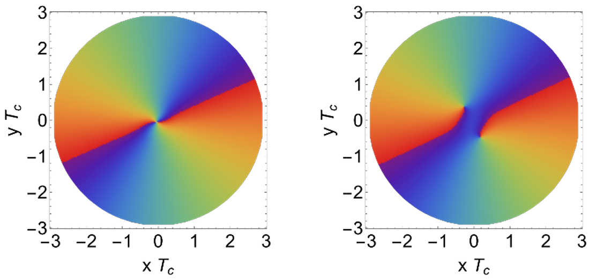
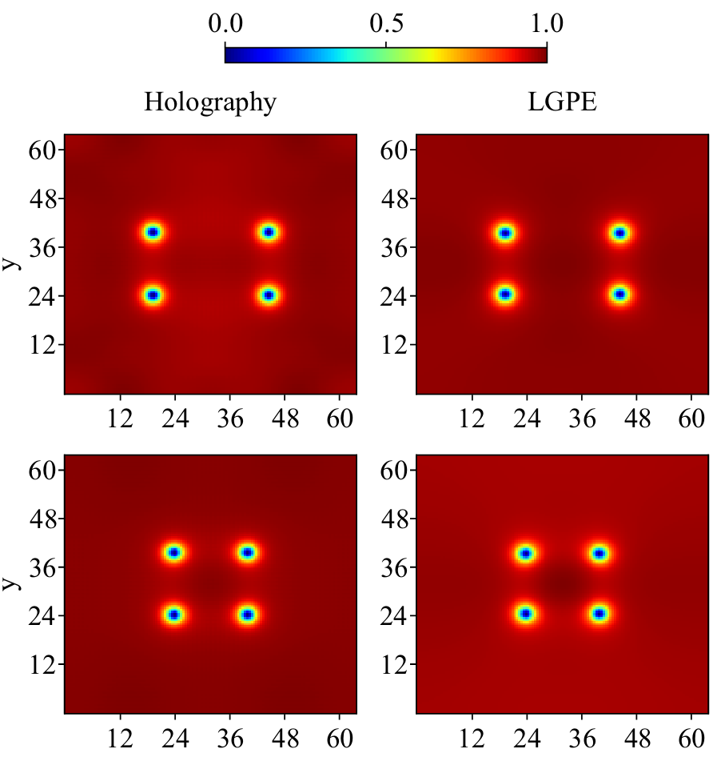
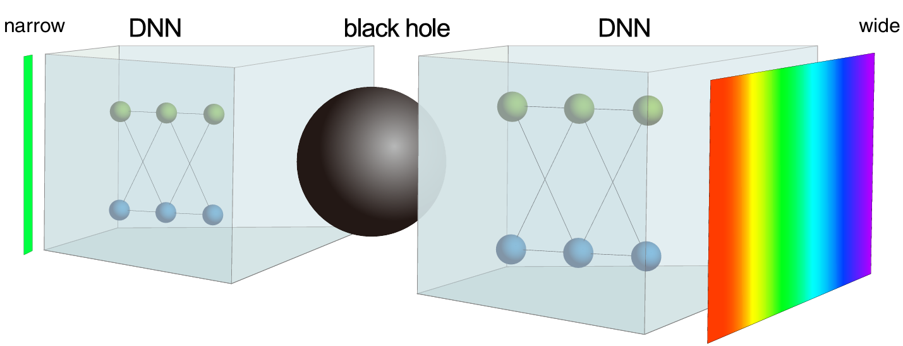

About
I am now a post-doc in Zhejiang University. I recived my BS degree in Physics in 2020 and Ph.D. in Theoretical Physics in 2025 from Shanghai University (SHU) and University of Chinese Academy of Sciences (UCAS), respectively.
My research mainly focuses on the application of gauge/gravity duality in condensed matter physics, non-equilibrium dynamics in superfluids like vortex dynamics and quantum turbulence. I'm also greatly interested in the AI for physics. I plan to carry out my future research: vortex reconnection and Kelvin wave cascade in three dimensional superfluids, quantum turbulence constructed by vortex knots, and exploring the holographic model for the quantum droplet through AI agents and deep learning.
Academic Experience
Education
University of Chinese Academy of Sciences, 2020-2025, Beijing, China
Ph.D. in Theoretical Physics, Advisor: Prof. Yu Tian
Shanghai University, 2016-2020, Shanghai, China
B.S. in Physics
Teaching
Spring 2023, Teaching Assistant, Differential Geometry and Topology in Physics, Yanqi Lake Campus, UCAS
Research Interests
- Gauge/gravity duality and holographic quantum matter
- Holographic superfluids
- Quantum turbulence and vortex dynamics
- deeping learning and AI in physics
Publications







